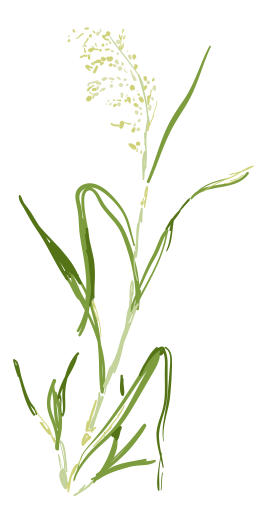
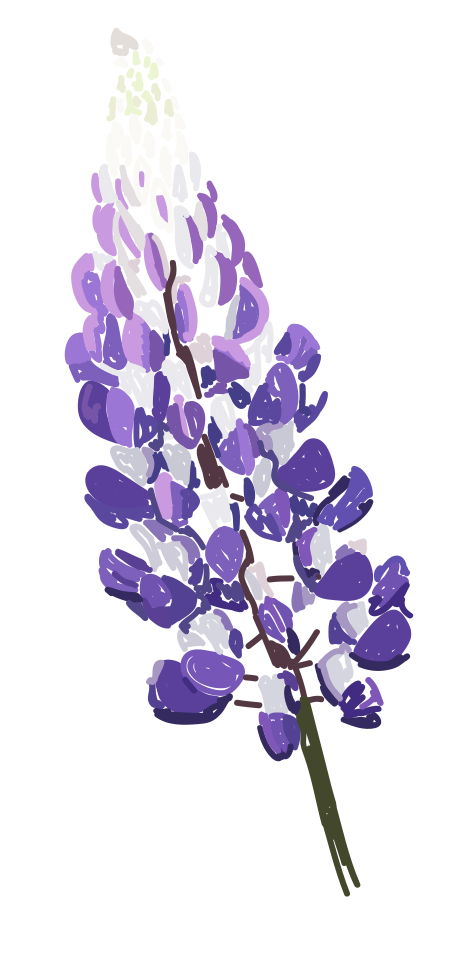

Food Subsistence in its Indended Form
Learning about the importance of intentional living from its masters: the Bad River Band of Lake Superior Ojibwe Indians
Sophie D'Amato
When thinking of the term "subsistence" or "sustainability", a mechanically-complex, convoluted solution comes to mind. A solution that challenges our notion of technology– one that requires decades of research and academic credibility.
While brand-name labels and minimalistic aesthetics dominate the environmentally-conscious consumer space, it is easy to associate the term sustainability with an inexpensive–and exclusive– price tag. In reality, sustainability, by definition, is the rate at which order can be maintained. As we reach a world population of almost eight billion, it is without refuting that our current habits and consumerist practices are indeed anything but sustainable. In having the privilege of traveling to the Bad River Ojibwe reservation–a territory rich in grassland, oak trees, and Anishinabe history– with my journalism class this spring quarter, I was reminded of the true essence of living a sustainable lifestyle–one of generosity, humility, and gratitude.

Eating food harvested and processed by the hands of our generous hosts, as their ancestors had centuries before, our class was given the opportunity to learn from their long-standing practices and recognize the innate differences between them and the practices of western industrialization.
Located on the banks of the Chequomegon Bay of Lake Superior, the Bad River territory coastline remains a beautifully preserved and undeveloped piece of land. Its community members, true stewards of its surroundings and natural resources, rely heavily on the trout, sturgeon, and whitefish populations in Lake Superior and other surrounding inland lakes. Honoring the traditional practices of Ojibwe culture, many band members continue to partake in traditional spearfishing rites.
"this will be a fascinating pull quote"
-sophie d'amato
Unlike residents of the state of Wisconsin, band members are restricted in their takings.
Paradoxically, the tribe has extensive ecology and fish population restoration initiatives in place. The Bad River hatcheries are responsible for rehabilitating and preserving the surrounding ecological habitat of Lake Superior, and in turn have great effects on the prosperity of all other Great Lakes.

While disproportionally restricted, traditional Ojibwe spearfishing practices reflect intentional and conscious consumption, and at the same time, with the help of their hugely successful hatcheries, lead to the restoration of harvested resources.
Individually inspected and categorized for analysis and further preservation, these fish are not only caught in a quick, ethical way but are intentionally taken from the ecosystem; each fish taking count in the final draw. With each meal shared, the taken lives of the fish are habitually honored and thanked by the community. This direct transfer of energy, from the lake’s ecosystem to the survival of the tribe’s culture, tradition, and population, is a testament to the vitality of the practice. Left with as little edible meat on the carcass as possible, the remains of the animal are offered to the surrounding ecosystem, bears and eagles mostly.

Although historically inducing controversy, Ojibwe spearfishing traditions have prevailed in their rights. In addition to spearfishing, many other traditional practices in Ojibwe culture continue to uphold ancestral values of preservation and restoration of the surrounding ecology, in addition to gratitude toward the land, resulting in intentional, sustainable practices.
Take the harvesting and processing of manoomin, or wild rice, for instance. Manoomin, praised as “the food that grows on water”, is referenced in Ojibwe rhetoric as being the spiritual guide and reasoning to the initial settling on the pristine shores of Lake Superior.
Unlike mass-producing grain factories, the traditional harvesting and production of manoomin (wild rice) are time-consuming, taking several hours to gather a sufficient collection for long-term storage. Yielding in plentiful quality, this centuries-old method of harvesting notably follows the natural cycle of its surrounding ecology. Collecting only mature seedlings, the practice of manoomin knocking respects the natural cycle of growth of the plant, preserving its immature seeds for further growth, ensuring following years of production. While factory production measures in quantity, resulting in excess, traditional manoomin collection measures in quality, resulting in sufficiency and gratitude from hours of quality time spent with family and friends.
Quality and intention– not brand-name labeling and cutting-edge technology– is where a possibility of accessible change lies. Rethinking our habits in the consumption of mass-produced products and instead of replacing them with nutrient-rich, emission-low practices that require intention and time, has the potential to restabilize our industrialized relationship with food. With purposeful motives, slowing down production in order to handle resources with care and acknowledgment enables us to truly connect with the food on our plates.
In recognizing the priority of intentional appreciation for the sustenance of the natural ecosystem, I found myself in appreciation of not only the beautiful opportunity itself, but for my classmates around me, and the mundane time spent in the school van, gazing out of the tinted van windows in silent reflection.
The weekend of immersion in the community of the Bad River Band of Lake Superior Ojibwe Indians was one of humility, learning, and intentional living, not only in the way we produced and consumed our food but with the relationships we nourished with impactful conversation and time. In being physically removed from the chaotic hustle of Northwestern’s academic and extracurricular culture, I was able to finally slow down and carefully reflect upon how easy it is to overthink the fulfillment and power of community and intentional living.